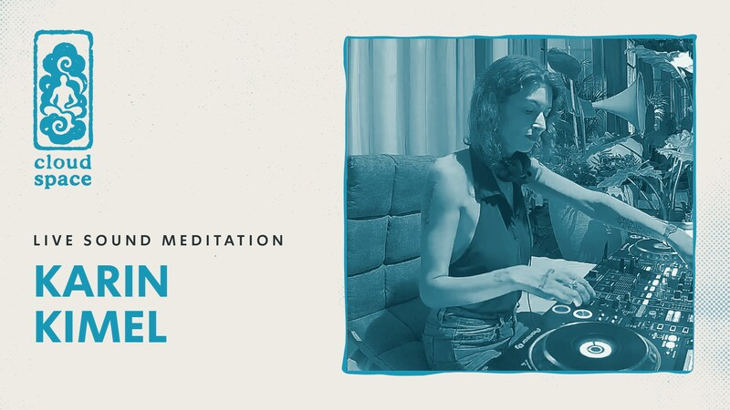
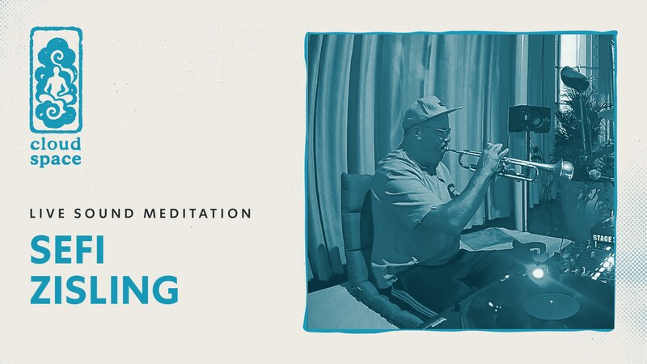
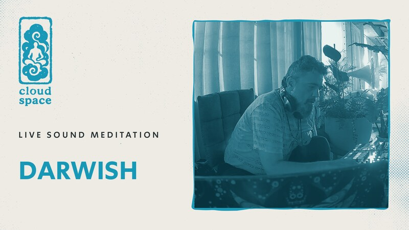
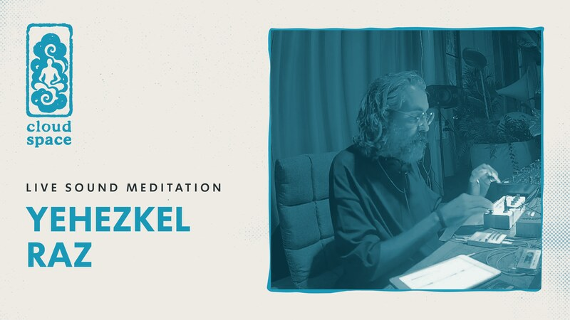
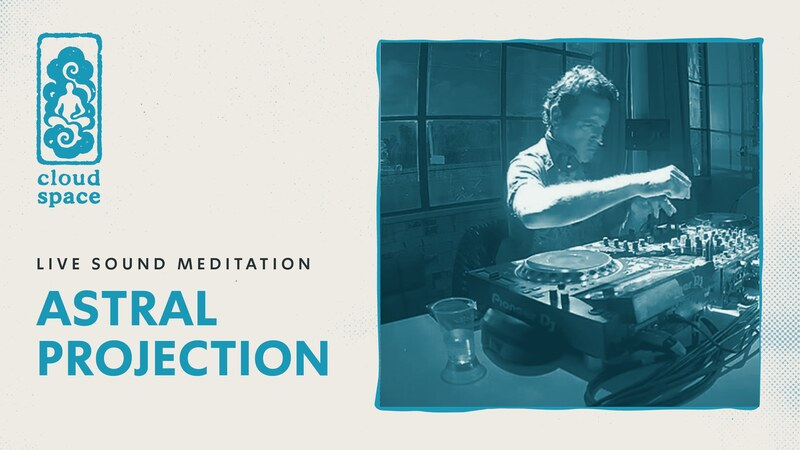

54 דק'קארין קימל
מסע קולי בין שכבות של לופים, טקסטורות ושקט, מהמיצגים הייחודיים שנוצרו במרחב.
דמו פנימי - עמוד הספרייה המוצע. אפס פריסה לאתר.
THE ARCHIVE · CLOUD SPACE
כל מדיטציית סאונד בקלאוד מוקלטת במלואה. כאן נמצאת הספרייה כולה - להאזנה בבית, ברכב, או בכל מקום שצריך רגע של שקט. חדשים נוספים אחרי כל סשן.

54 דק'מסע קולי בין שכבות של לופים, טקסטורות ושקט, מהמיצגים הייחודיים שנוצרו במרחב.

61 דק'חצוצרה חיה מעל מבחר תקליטי ג'אז רוחני.

58 דק'דרוויש במסע מדיטטיבי מהפנט בין מזרח למערב.

63 דק'סאונדסקייפס ומרחבים אלקטרוניים אטמוספריים מאחד היוצרים הישראלים המושמעים בעולם.

57 דק'הסשן שפתח את קלאוד ספייס - צלילה אלקטרונית עמוקה מצמד האמנים הוותיק.